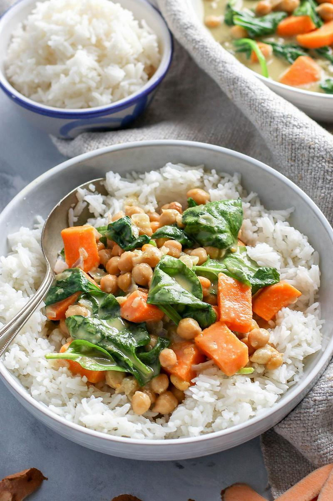

Thai Sweet Potato and Chickpea Green Curry

Description
This is a mash-up of all the things that make a great curry. It's creamy, protein-rich,
and loaded with delicious veggies. The curry paste makes it a touch spicy, and this whole
dinner comes together with under 10 ingredients.
This is another recipe extracted from the Pick Up Limes website. It serves 4, and
requires only 30 min to make from scratch.
Ingredients
- Uncooked white rice, rinsed - 200 g
- Vegetable oil - 5 ml
- Medium onion diced - 1x
- Garlic cloves, crushed -2x
- Thai green curry paste - 2 tbsp
- Medium sweet potato, cubed - 1x
- Canned full-fat coconut milk - 400 g
- Canned chickpeas drained and rinsed - 200 g
- Water - 120 ml
- Fresh spinach - 60 g
Steps
- Cook the rice according to the package instructions.
- To a large pot on high heat, add the oil and onions, and cook until the onions
are soft, about 3 minutes. Add splashes of water as needed to deglaze the pot.
- Add the garlic and sauté until fragrant, about 1 minute.
- Add the curry paste, and mash into the garlic and onion mixture until fragrant,
about 30 seconds.
- Then add the sweet potato, coconut milk, chickpeas, and water.
- Bring to a boil, then reduce to a simmer for 10 - 15 minutes, partially covered,
until the sweet potatoes are cooked through.
- Remove from heat and add the spinach, stirring to wilt.
- Serve over rice or with naan, and enjoy!